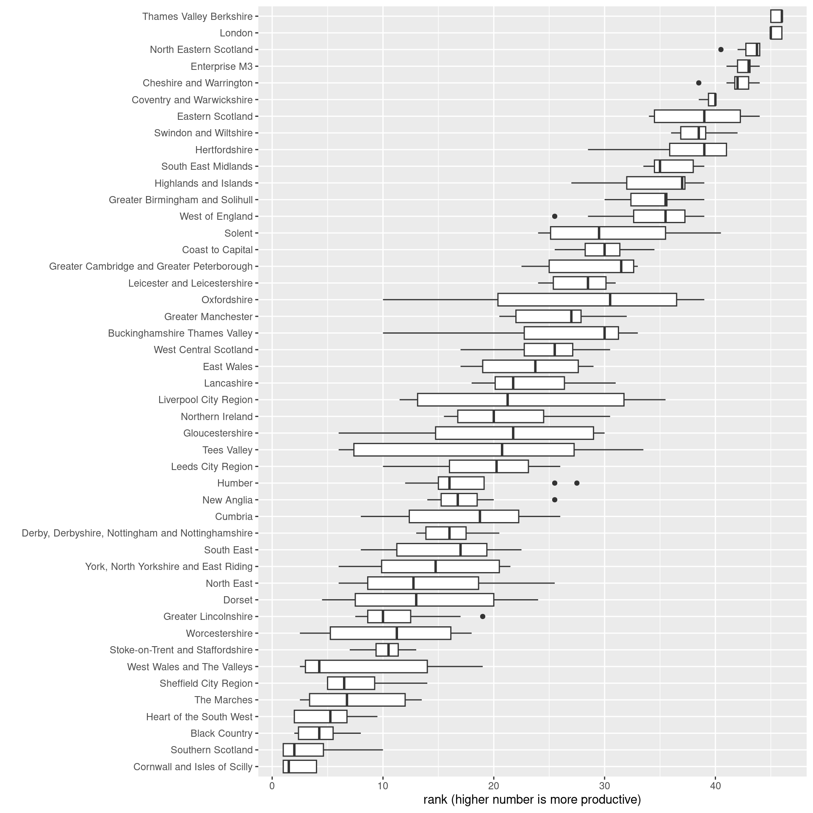
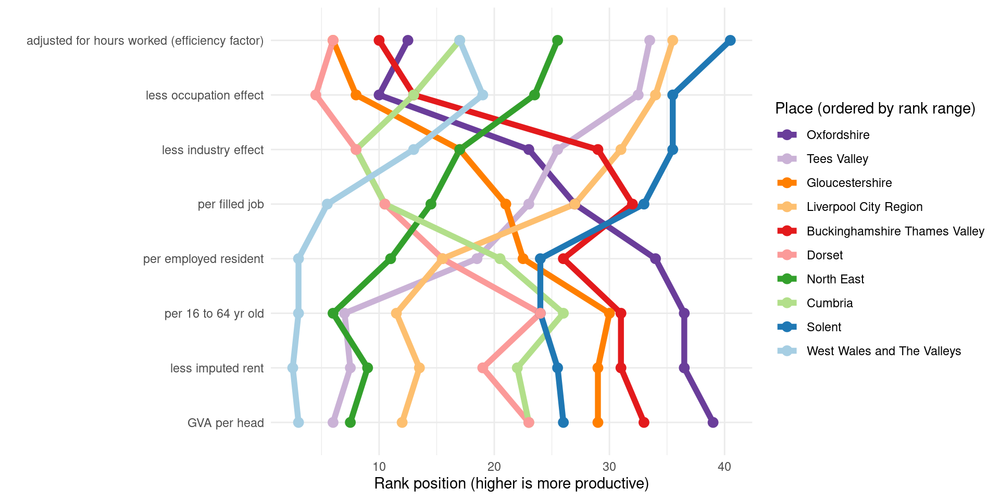

#Load in scraped data from table 1
pip <- read_csv('data/Beatty_Fothergill_productivity-industries-places_table1.csv') %>% filter(Place!='United Kingdom')
#Get factor order from column order before converting to long
measure_factororder = names(pip)[2:9]
pip <- pip %>%
pivot_longer(cols = 2:9, names_to = "measure", values_to = "value") %>%
mutate(measure = factor(measure, ordered = T, levels = measure_factororder)) %>%
mutate(SCR = ifelse(Place == 'Sheffield City Region', T,F))
p <- ggplot(pip, aes(x = measure, y = value, group = Place, colour = SCR, alpha = SCR)) +
geom_jitter(width = 0.1, size = 3) +
geom_hline(yintercept = 100, colour = 'red', size = 3, alpha = 0.25) +
scale_colour_manual(values = c('black','red')) +
scale_alpha_manual(values = c(0.5,1)) +
coord_flip() +
xlab('') + ylab('index value (UK average is 100)')
ggplotly(p, tooltip = 'Place')Beatty & Fothergill on productivity: viz
Beatty and Fothergill report: ‘Productivity of Industry and Places’ 2020
This CRESR report from 2020 presents a fascinating analysis of how different the UK productivity picture is depending on what measure/control one uses. To illustrate this, I scraped the numbers out of table 1 - this gives index values for the eight different measures the report compares.
This first plot is just the values from table 1 in interactive form, comparing each measure type and showing South Yorkshire in red (or Sheffield City Region, as it was at the time). See the report pp.3 for a full explanation of each measure.
The report interprets the differences in values in this figure as percentage differences. So, for the largest gap between lowest and highest - GVA per head:
“London comes out on top at 177 per cent of the UK average, whereas Southern Scotland ranks lowest at just 59 per cent. To put these figures another way, output per head in London is three times higher than in Southern Scotland.” (p.5)
At the other extreme, controlling for industry, occupation and hours worked:
“London is overtaken at the top by Thames Valley Berkshire, at 126 per cent of the UK average, whilst Cornwall is lowest at 81 per cent… the lowest ranked UK sub-region has an estimated efficiency of production that is just below two-thirds of the best.” (p.6)
That’s a big difference - the top ranked place being 3 times more productive, vs only a two-thirds gap overall. There’s possibly an argument for not adjusting for industrial mix (that mix is exactly one of the things one might want to change to improve productivity) but it’s still a very strong illustration of what difference all the various key factors (including demographics, unemployment, inactivity etc) can make.
It’s also striking if places are ranked on each of these measures, and then seeing how much rank position changes.
The top five most productive places hardly change rank at all for the different measures. Cornwall and Isles of Scilly, at the least productive end, overlap with a few other places depending on the measure.
Very many places, however, have radically different productivity rank positions depending on the chosen measure.
pip <- pip %>%
group_by(measure) %>%
mutate(
rank = rank(value)
) %>%
group_by(Place) %>%
mutate(
meanrank = mean(rank),
rankrange = max(rank) - min(rank)
)
#Look at spread of rank positions for all places
#Order by mean rank
ggplot(pip, aes(x = fct_reorder(Place, meanrank), y = rank)) +
geom_boxplot() +
coord_flip() +
xlab("") +
ylab("rank (higher number is more productive)")
Picking out the top ten places with the widest difference in rank across measures and looking at how they change, for some there is clear opposite movement: Oxfordshire, very near highest rank for GVA per head, drops very far down for the other measures. Tees Valley goes in the opposite direction.
It looks like a geographical north-south pattern for which measure types and their rank range dominate. Oxfordshire and Gloucestershire start out with higher rank than Liverpool City Region and Tees, but those swap over entirely.
#Pick out TEN of the largest rank spreads
top_places <- pip %>%
ungroup() %>%
distinct(Place, rankrange) %>%
arrange(desc(rankrange)) %>%
slice_head(n = 10) %>%
pull(Place)
#Look at that for top rank movers
ggplot(pip %>% filter(Place %in% top_places) %>% ungroup() %>% mutate(Place = fct_reorder(Place,-rankrange,mean)), aes(x = measure, y = rank, group = Place, colour = Place)) +
geom_line(size = 2) +
geom_point(size = 3) +
scale_color_brewer(palette = 'Paired', direction = -1) +
coord_flip() +
guides(colour=guide_legend(title="Place (ordered by rank range)")) +
theme_minimal() +
xlab('') + ylab('Rank position (higher is more productive)')